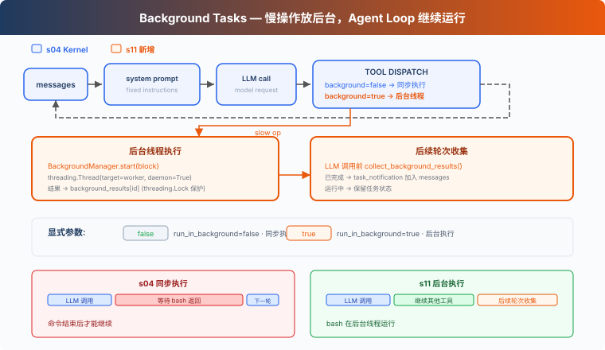

s11: Background Tasks — 慢操作放后台
s01 → ... → s09 → s10 → s11 → s12 → s13 → ... → s16 → s17
"慢操作放后台，Agent Loop 继续运行" — 后台线程执行命令，后续轮次收集完成结果。
Harness 层: 后台 — 异步执行, 不阻塞主循环。
问题
读取文件或运行 git status 通常很快，同步执行时等待并不明显。但安装依赖、执行完整测试或构建项目可能持续几分钟。在命令返回前，Harness 无法处理当前响应中的下一个工具调用，也不能进入下一轮。
如果后续工作并不依赖这个命令，继续等待就没有必要。例如，Agent 启动完整测试后，本来还可以检查文档或整理其他文件，但同步执行会让整个 Agent Loop 停在这次 Bash 调用上。
S11 要解决的问题是：让耗时的 Bash 命令在后台执行，使 Agent Loop 可以继续处理其他工作，并在后续轮次收集完成结果。
解决方案

本章把慢操作放入后台线程。当前工具调用先返回一个占位 tool_result，Agent Loop 可以继续运行；后续轮次开始时再收集已经完成的结果，以通知形式加入对话。
同步 vs 后台：
| 同步 (s04) | 后台 (s11) | |
|---|---|---|
| 慢操作 | 当前工具调用被阻塞 | 后台线程执行 |
| Agent Loop | 等待命令返回 | 收到占位结果后继续运行 |
| 结果 | 命令结束后返回 | 先返回 bg_id，后续轮次收集结果 |
| 判断标准 | — | bash 的 run_in_background 参数 |
工作原理
should_run_background: 显式请求
模型通过 bash 工具的 run_in_background 参数请求后台执行。只有参数明确为 true，并且工具是 bash 时，才会进入后台执行路径。其他调用仍然同步执行。
def should_run_background(tool_name: str, tool_input: dict) -> bool:
return (
tool_name == "bash"
and tool_input.get("run_in_background") is True
)
不再根据 install、build 或 test 等关键词猜测。是否进入后台由工具调用明确决定。
BackgroundManager: 后台执行与生命周期
BackgroundManager 保存任务状态和完成队列。start() 先登记任务，再启动 daemon 线程，并立即返回 bg_id：
class BackgroundManager:
def __init__(self):
self.tasks = {}
self.results = {}
self._ready = []
self._lock = threading.Lock()
def start(self, block) -> str:
# Register task, then run _run() in a daemon thread.
...
def _run(self, task_id: str, command: str):
output, exit_code = _run_bash_process(command)
status = "completed" if exit_code == 0 else "failed"
with self._lock:
self.tasks[task_id]["status"] = status
self.results[task_id] = _format_bash_result(output, exit_code)
self._ready.append(task_id)
命令以非零状态退出或 worker 抛出异常时，任务会进入 failed。Shell 会在独立的进程组中启动；命令完成、超时，或 Agent 经正常路径、SIGTERM 退出时，运行时会停止原进程组。这只是生命周期清理，并不是沙箱；另建 session 的进程仍可能离开该进程组。
collect_background_results: 通知收集
后续轮次开始时，collect() 从完成队列中取出结果，并格式化为 <task_notification> 通知：
def collect_background_results() -> list[str]:
return BACKGROUND.collect()
通知不复用原始 tool_use_id。原始 tool call 已经用占位 tool_result 回复了；后续收集完成结果时，会用 task_notification 格式把它作为独立事件加入对话。一个 tool_use 仍然只对应一个 tool_result。
循环中的集成
每次调用 LLM 前，Agent Loop 先收集已经完成的后台结果。execute_tool() 仍然在主线程执行 PreToolUse，然后再选择同步或后台执行：
while True:
inject_background_results(messages)
response = client.messages.create(...)
def execute_tool(block) -> str:
blocked = trigger_hooks("PreToolUse", block)
if blocked is not None:
return str(blocked)
if should_run_background(block.name, block.input):
task_id = start_background_task(block)
output = f"[Background task {task_id} started]"
else:
output = call_tool(block)
trigger_hooks("PostToolUse", block, output)
return output
慢操作先返回一个带 bg_id 的占位 tool_result。后台结果不会主动唤醒 Agent；下一次进入 Agent Loop 时，inject_background_results() 才会收集已经完成的结果。
合起来跑
Turn 1:
LLM → bash "npm install" (run_in_background=true)
→ start_background_task → bg_0001
→ tool_result: "[Background task bg_0001 started]..."
→ LLM: "OK, I'll check later. Let me also read the config."
Turn 2:
LLM → read_file "package.json" (fast, sync)
→ tool_result: file content
Turn 3:
→ collect bg_0001 as <task_notification>
→ LLM sees: config file + install notification in one message
npm install 在后台运行时，Agent Loop 继续执行了 read_file。
本章新增了什么
| 组件 | S04 Kernel | S11 |
|---|---|---|
| 执行模型 | 全部同步 | 慢操作后台线程 + 通知注入 |
| bash schema | command |
command + run_in_background |
| 新函数 | — | should_run_background, start_background_task, collect_background_results, inject_background_results |
| 新类型 | — | BackgroundManager |
| 通知格式 | — | <task_notification>（不复用 tool_use_id） |
| 循环行为 | 工具同步执行 | 显式后台执行，后续轮次收集完成结果 |
| 工具 | 5 | 5（bash schema 增加一个参数） |
试一下
cd learn-claude-code
python s11_background_tasks/code.py
试试这些 prompt：
Run pip list in the background and find all Python files in this directoryRun npm install (use run_in_background) and while waiting, read package.jsonRun a short sleep in the background, then list all Markdown files
观察重点：显式设置 run_in_background 后，命令有没有被送到后台？bg_id 是否返回？后续轮次有没有以 <task_notification> 格式收集完成结果？
接下来
后台任务解决了"慢操作不阻塞"。但如果想定时做某件事呢？比如"每天早上 9 点跑测试"、"每 5 分钟检查一次服务器状态"。
s12 Cron Scheduler → 给 Agent 装一个闹钟。